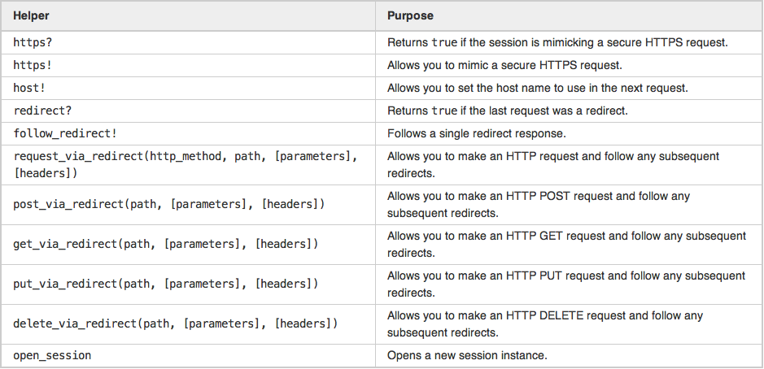
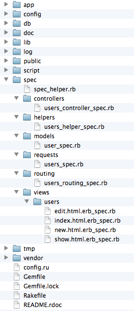

Testing Rails Apps
Hatem Mahmoud
Outline
- Introduction
- Testing in Rails
- Unit Testing
- Functional Testing
- Integration Testing
- Factories
- RSpec
- Resources
Introduction
Software Testing
The process of analyzing a software item to detect the differences between existing and required conditions.
IEEE
Verification vs. Validation
- Verification
Have we built the software right? - Validation
Have we built the right software?
Testing Methods
- Static vs. Dynamic
- White-Box vs. Black-Box
Static vs. Dynamic
- Static Testing
Reviews, walkthroughs, inspections, etc. - Dynamic Testing
Executing programmed code with test cases.
White-Box vs. Black-Box
- White-Box Testing
Tests internal workings of a software. - Black-Box Testing
Tests the functionality exposed to the end-user.
Testing Levels
| Target | Objectives |
|---|---|
|
|
Test Automation
The use of a special software to automate tests that are repetitive or difficult to perform manually.
Testing Philosophies
1. No Testing!
Development without Testing
- Makes collaboration harder
- Instills fear and resistance to change
- Fails to empower developers to take responsibility
2. Waterfall Testing
Testing is performed by independent group of testers in a separate phase after the implementation.
3. Agile Testing
Testing is performed by all team members incrementally and iteratively.
4. Test-Driven Development (TDD)
For each software unit, a software developer must:
- Write a failing test
- Write the minimum amount of code to make the test pass
- Refactor the new code to acceptable standards
TDD - Cost of Change

5. Behavior-Driven Development (BDD)
Combines Test-Driven Development, Domain Driven Design, and Acceptance Test-Driven Planning.
5. Behavior-Driven Development (BDD)
- Unit test names should be whole sentences starting with "should" and should be written in order of business value.
-
Acceptance tests should be written in user stories:
As a [role] I want [feature] so that [benefit] -
Acceptance criteria should be written in scenarios:
Given [context], when [event occurs], then [ensure some outcomes]
Testing in Rails
Testing Support in Rails
- Ruby ships with
Test::Unitframework - Testing support was built into Rails from the beginning
- The
testfolder is created once an app is generated - Skeleton test code is generated for models and controllers
- The
testenvironment is used when running tests - Fixtures are used to organize sample data
Test Folder
$ rails new tasks

Test Database
development:
adapter: sqlite3
database: db/development.sqlite3
pool: 5
timeout: 5000
# Warning: The database defined as "test" will be erased and
# re-generated from your development database when you run "rake".
# Do not set this db to the same as development or production.
test:
adapter: sqlite3
database: db/test.sqlite3
pool: 5
timeout: 5000
production:
adapter: sqlite3
database: db/production.sqlite3
pool: 5
timeout: 5000
Skeleton Tests
$ rails generate scaffold task name
...
create app/models/task.rb
invoke test_unit
create test/unit/task_test.rb
create test/fixtures/tasks.yml
...
invoke scaffold_controller
create app/controllers/tasks_controller.rb
...
invoke test_unit
create test/functional/tasks_controller_test.rb
invoke helper
create app/helpers/tasks_helper.rb
invoke test_unit
create test/unit/helpers/tasks_helper_test.rb
Running Tests
$ rake test
You have 1 pending migrations:
20130417090836 CreateTasks
Run `rake db:migrate` to update your database then try again.
$ rake db:migrate
== CreateTasks: migrating ====================================================
-- create_table(:tasks)
-> 0.0056s
== CreateTasks: migrated (0.0057s) ===========================================
$ rake test
Finished tests in 0.031115s, 0.0000 tests/s, 0.0000 assertions/s.
0 tests, 0 assertions, 0 failures, 0 errors, 0 skips
Rake Tasks
Testing Layers

Testing Layers - Impact
Testing Layers - Cost
Unit Testing
1. Write a Failing Test
# tasks/test/unit/task_test.rb
require 'test_helper'
class TaskTest < ActiveSupport::TestCase
test 'invalid without a name' do
t = Task.new
assert !t.valid?, 'Name is not being validated'
end
end
$ rake test
1) Failure:
test_invalid_without_a_name(TaskTest) [/tasks/test/unit/task_test.rb:6]:
Name is not being validated
Finished tests in 0.059179s, 16.8979 tests/s, 16.8979 assertions/s.
1 tests, 1 assertions, 1 failures, 0 errors, 0 skips
2. Make it Pass
# tasks/app/models/task.rb
class Task < ActiveRecord::Base
attr_accessible :name
validates :name, presence: true
end
$ rake test
Finished tests in 0.060384s, 16.5607 tests/s, 16.5607 assertions/s.
1 tests, 1 assertions, 0 failures, 0 errors, 0 skips
3. Refactor
# tasks/test/fixtures/tasks.yml
milk:
name: Buy milk
rspec:
name: Learn RSpec# tasks/test/unit/task_test.rb
require 'test_helper'
class TaskTest < ActiveSupport::TestCase
def setup
@task = tasks(:milk)
end
test 'valid with a name' do
assert @task.valid?, 'Task was not valid'
end
test 'invalid without a name' do
@task.name = nil
assert !@task.valid?, 'Name is not being validated'
end
endTest::Unit Assertions

Rails Specific Assertions
shoulda
# Gemfile
group :test do
gem 'shoulda'
end# tasks/test/unit/task_test.rb
require 'test_helper'
class TaskTest < ActiveSupport::TestCase
should validate_presence_of(:name)
should ensure_length_of(:name).is_at_most(15)
should validate_uniqueness_of(:name)
should validate_numericality_of(:priority)
should ensure_inclusion_of(:priority).in_range(1..3)
should belong_to(:project)
should have_many(:subtasks)
should allow_value("a@b.com").for(:email)
should_not allow_value("blah").for(:email)
should_not allow_mass_assignment_of(:password)
should ensure_length_of(:password).is_at_least(5).is_at_most(20)
should validate_acceptance_of(:terms_of_service)
endFunctional Testing
Controller Test
# tasks/test/functional/tasks_controller_test.rb
require 'test_helper'
class TasksControllerTest < ActionController::TestCase
setup do
@task = tasks(:milk)
end
test "should get index" do
get :index
assert_response :success
assert_not_nil assigns(:tasks)
end
test "should get new" do
get :new
assert_response :success
end
test "should create task" do
assert_difference('Task.count') do
post :create, task: { name: @task.name }
end
assert_redirected_to task_path(assigns(:task))
end
test "should show task" do
get :show, id: @task
assert_response :success
end
test "should get edit" do
get :edit, id: @task
assert_response :success
end
test "should update task" do
put :update, id: @task, task: { name: @task.name }
assert_redirected_to task_path(assigns(:task))
end
test "should destroy task" do
assert_difference('Task.count', -1) do
delete :destroy, id: @task
end
assert_redirected_to tasks_path
end
end
No Need!
- Views shouldn’t have logic
- Controllers shouldn’t have logic
- Integration tests have you covered
Integration Testing
Integration Test
$ rails generate integration_test task_management
invoke test_unit
create test/integration/task_management_test.rb
# tasks/test/integration/task_management_test.rb
require 'test_helper'
class TaskManagementTest < ActionDispatch::IntegrationTest
test 'list all tasks' do
task = tasks(:milk)
get tasks_path
assert_response :success
assert_select 'li.task', task.name
end
end
Helpers for Integration Tests
Capybara
# Gemfile
group :test do
gem 'capybara'
end
# tasks/test/test_helper.rb
require 'capybara/rails'
class ActionDispatch::IntegrationTest
# Make the Capybara DSL available in all integration tests
include Capybara::DSL
end
Capybara
# tasks/test/integration/task_management_test.rb
require 'test_helper'
class TaskManagementTest < ActionDispatch::IntegrationTest
test 'creates a new task' do
visit tasks_path
click_link 'New Task'
fill_in 'task_name', with: 'Learn TDD'
click_button 'Create Task'
assert page.has_content? 'Task was successfully created.'
assert page.has_content? 'Learn TDD'
end
end
Launchy
# Gemfile
group :test do
gem 'capybara'
gem 'launchy'
end
# tasks/test/integration/task_management_test.rb
require 'test_helper'
class TaskManagementTest < ActionDispatch::IntegrationTest
test 'creates a new task' do
visit tasks_path
click_link 'New Task'
fill_in 'task_name', with: 'Learn TDD'
click_button 'Create Task'
save_and_open_page
assert page.has_content? 'Task was successfully created.'
assert page.has_content? 'Learn TDD'
end
end
Factories
factory_girl
# Gemfile
group :development, :test do
gem 'factory_girl_rails'
end
$ rails generate model project name
invoke active_record
create db/migrate/20130417150111_create_projects.rb
create app/models/project.rb
invoke test_unit
create test/unit/project_test.rb
invoke factory_girl
create test/factories/projects.rb
factory_girl
# tasks/test/factories.rb
FactoryGirl.define do
factory :project do
sequence(:name) { |n| "Project#{n}" }
due_at Date.tomorrow
end
factory :task do
project
sequence(:name) { |n| "Task#{n}" }
done false
end
end
factory_girl
# tasks/test/unit/task_test.rb
require 'test_helper'
class TaskTest < ActiveSupport::TestCase
test 'invalid without a name' do
task = FactoryGirl.build(:task, name: nil)
assert !task.valid?, 'Name is not being validated'
end
test 'has a unique name in project' do
task1 = FactoryGirl.create(:task)
project = task1.project
task2 = FactoryGirl.build(:task, project: project, name: task1.name)
assert !task2.valid?, 'Name is not unique in project'
task3 = FactoryGirl.build(:task, project: FactoryGirl.create(:project), name: task1.name)
assert task3.valid?
end
endRSpec
RSpec Setup
$ rails new mooc --skip-test-unit
# Gemfile
group :development, :test do
gem 'rspec-rails'
end
$ rails generate rspec:install
create .rspec
create spec
create spec/spec_helper.rb
RSpec Generators
$ rails generate scaffold user name
invoke active_record
create db/migrate/20130418110210_create_users.rb
create app/models/user.rb
invoke rspec
create spec/models/user_spec.rb
...
invoke rspec
create spec/controllers/users_controller_spec.rb
create spec/views/users/edit.html.erb_spec.rb
create spec/views/users/index.html.erb_spec.rb
create spec/views/users/new.html.erb_spec.rb
create spec/views/users/show.html.erb_spec.rb
create spec/routing/users_routing_spec.rb
invoke rspec
create spec/requests/users_spec.rb
invoke helper
create app/helpers/users_helper.rb
invoke rspec
create spec/helpers/users_helper_spec.rb
...
spec Folder
Running Specs
$ rake spec
/Users/Hatem/.rbenv/versions/2.0.0-p0/bin/ruby -S rspec ./spec/controllers/users_controller_spec.rb ./spec/helpers/users_helper_spec.rb ./spec/models/user_spec.rb ./spec/requests/users_spec.rb ./spec/routing/users_routing_spec.rb ./spec/views/users/edit.html.erb_spec.rb ./spec/views/users/index.html.erb_spec.rb ./spec/views/users/new.html.erb_spec.rb ./spec/views/users/show.html.erb_spec.rb
..*..................*........
Pending:
User add some examples to (or delete) /Users/Hatem/Presentations/Ruby on Rails/rails-testing/mooc/spec/models/user_spec.rb
# No reason given
# ./spec/models/user_spec.rb:4
UsersHelper add some examples to (or delete) /Users/Hatem/Presentations/Ruby on Rails/rails-testing/mooc/spec/helpers/users_helper_spec.rb
# No reason given
# ./spec/helpers/users_helper_spec.rb:14
Finished in 0.33651 seconds
30 examples, 0 failures, 2 pending
Model Specs
# mooc/spec/models/lecture_spec.rb
require 'spec_helper'
describe Lecture do
let(:lecture) { FactoryGirl.create :lecture }
it 'has a valid factory' do
lecture.should be_valid
end
it 'validates presence of title and summary' do
FactoryGirl.build(:lecture, title: nil).should have(1).error_on(:title)
FactoryGirl.build(:lecture, summary: nil).should have(1).error_on(:summary)
end
it 'validates length of title' do
FactoryGirl.build(:lecture, title: 'a'*100).should be_valid
FactoryGirl.build(:lecture, title: 'a'*101).should have(1).error_on(:title)
end
it 'validates uniqueness of title in section' do
course = FactoryGirl.create :course
section1 = FactoryGirl.create :section, course: course
section2 = FactoryGirl.create :section, course: course
lecture = FactoryGirl.create :lecture, section: section1, title: 'Lecture One'
FactoryGirl.build(:lecture, section: section1, title: lecture.title.downcase).should have(1).error_on(:title)
FactoryGirl.build(:lecture, section: section2, title: lecture.title.downcase).should be_valid
end
it 'validates format of video url' do
FactoryGirl.build(:lecture, video: nil).should be_valid
FactoryGirl.build(:lecture, video: 'http://www.youtube.com/watch?v=123-abc_XYZ').should be_valid
FactoryGirl.build(:lecture, video: 'http://www.youtube.com/123-abc_XYZ').should have(1).error_on(:video)
FactoryGirl.build(:lecture, video: 'http://www.example.com/watch?v=123-abc_XYZ').should have(1).error_on(:video)
end
end
Controller Specs
# mooc/spec/controllers/users_controller_spec.rb
require 'spec_helper'
describe UsersController do
# This should return the minimal set of attributes required to create a valid
# User. As you add validations to User, be sure to
# update the return value of this method accordingly.
def valid_attributes
{ "name" => "MyString" }
end
# This should return the minimal set of values that should be in the session
# in order to pass any filters (e.g. authentication) defined in
# UsersController. Be sure to keep this updated too.
def valid_session
{}
end
describe "GET index" do
it "assigns all users as @users" do
user = User.create! valid_attributes
get :index, {}, valid_session
assigns(:users).should eq([user])
end
end
describe "GET show" do
it "assigns the requested user as @user" do
user = User.create! valid_attributes
get :show, {:id => user.to_param}, valid_session
assigns(:user).should eq(user)
end
end
describe "GET new" do
it "assigns a new user as @user" do
get :new, {}, valid_session
assigns(:user).should be_a_new(User)
end
end
describe "GET edit" do
it "assigns the requested user as @user" do
user = User.create! valid_attributes
get :edit, {:id => user.to_param}, valid_session
assigns(:user).should eq(user)
end
end
describe "POST create" do
describe "with valid params" do
it "creates a new User" do
expect {
post :create, {:user => valid_attributes}, valid_session
}.to change(User, :count).by(1)
end
it "assigns a newly created user as @user" do
post :create, {:user => valid_attributes}, valid_session
assigns(:user).should be_a(User)
assigns(:user).should be_persisted
end
it "redirects to the created user" do
post :create, {:user => valid_attributes}, valid_session
response.should redirect_to(User.last)
end
end
describe "with invalid params" do
it "assigns a newly created but unsaved user as @user" do
# Trigger the behavior that occurs when invalid params are submitted
User.any_instance.stub(:save).and_return(false)
post :create, {:user => { "name" => "invalid value" }}, valid_session
assigns(:user).should be_a_new(User)
end
it "re-renders the 'new' template" do
# Trigger the behavior that occurs when invalid params are submitted
User.any_instance.stub(:save).and_return(false)
post :create, {:user => { "name" => "invalid value" }}, valid_session
response.should render_template("new")
end
end
end
describe "PUT update" do
describe "with valid params" do
it "updates the requested user" do
user = User.create! valid_attributes
# Assuming there are no other users in the database, this
# specifies that the User created on the previous line
# receives the :update_attributes message with whatever params are
# submitted in the request.
User.any_instance.should_receive(:update_attributes).with({ "name" => "MyString" })
put :update, {:id => user.to_param, :user => { "name" => "MyString" }}, valid_session
end
it "assigns the requested user as @user" do
user = User.create! valid_attributes
put :update, {:id => user.to_param, :user => valid_attributes}, valid_session
assigns(:user).should eq(user)
end
it "redirects to the user" do
user = User.create! valid_attributes
put :update, {:id => user.to_param, :user => valid_attributes}, valid_session
response.should redirect_to(user)
end
end
describe "with invalid params" do
it "assigns the user as @user" do
user = User.create! valid_attributes
# Trigger the behavior that occurs when invalid params are submitted
User.any_instance.stub(:save).and_return(false)
put :update, {:id => user.to_param, :user => { "name" => "invalid value" }}, valid_session
assigns(:user).should eq(user)
end
it "re-renders the 'edit' template" do
user = User.create! valid_attributes
# Trigger the behavior that occurs when invalid params are submitted
User.any_instance.stub(:save).and_return(false)
put :update, {:id => user.to_param, :user => { "name" => "invalid value" }}, valid_session
response.should render_template("edit")
end
end
end
describe "DELETE destroy" do
it "destroys the requested user" do
user = User.create! valid_attributes
expect {
delete :destroy, {:id => user.to_param}, valid_session
}.to change(User, :count).by(-1)
end
it "redirects to the users list" do
user = User.create! valid_attributes
delete :destroy, {:id => user.to_param}, valid_session
response.should redirect_to(users_url)
end
end
end
Request Specs
# mooc/spec/requests/users_spec.rb
require 'spec_helper'
describe "home page" do
it "displays the user's username after successful login" do
user = User.create!(:username => "jdoe", :password => "secret")
get "/login"
assert_select "form.login" do
assert_select "input[name=?]", "username"
assert_select "input[name=?]", "password"
assert_select "input[type=?]", "submit"
end
post "/login", :username => "jdoe", :password => "secret"
assert_select ".header .username", :text => "jdoe"
end
end
Request Specs
# mooc/spec/requests/users_spec.rb
require 'spec_helper'
describe "home page" do
it "displays the user's username after successful login" do
user = FactoryGirl.create(:user, :username => "jdoe", :password => "secret")
visit "/login"
fill_in "Username", :with => "jdoe"
fill_in "Password", :with => "secret"
click_button "Log in"
expect(page).to have_selector(".header .username", :text => "jdoe")
end
end
Feature Specs
# mooc/spec/features/sections_spec.rb
require 'spec_helper'
feature 'Sections' do
context 'instructor' do
given(:instructor) { FactoryGirl.create :user, role: 'instructor' }
given(:course) { FactoryGirl.create :course, instructor: instructor }
background do
login instructor
end
scenario 'creates a new section' do
visit course_sections_path(course)
click_link I18n.t('courses.navigation.new_section')
fill_in I18n.t('activerecord.attributes.section.name'), with: 'First Section'
click_button I18n.t('helpers.submit.create', model: I18n.t('activerecord.models.section'))
page.should have_content I18n.t('sections.create.created')
page.should have_content 'First Section'
end
scenario 'updates a section' do
section = FactoryGirl.create :section, course: course, name: 'First Section'
visit course_sections_path(course)
click_link "edit_section_#{section.id}"
fill_in I18n.t('activerecord.attributes.section.name'), with: 'First Section Updated'
click_button I18n.t('helpers.submit.update', model: I18n.t('activerecord.models.section'))
page.should have_content I18n.t('sections.update.updated')
page.should have_content 'First Section Updated'
end
scenario 'deletes an empty section' do
section = FactoryGirl.create :section, course: course, name: 'First Section'
section_name = section.name
visit edit_course_section_path(course, section)
expect { click_button "delete_section_#{section.id}" }.to change(Section, :count).by(-1)
page.should have_content I18n.t('sections.destroy.deleted')
page.should_not have_content section_name
end
scenario 'cannot delete a section if not empty' do
section = FactoryGirl.create :section, course: course, name: 'First Section'
section_name = section.name
lecture = FactoryGirl.create :lecture, section: section
visit edit_course_section_path(course, section)
expect { click_button "delete_section_#{section.id}" }.to change(Section, :count).by(0)
page.should have_content I18n.t('sections.you_cannot_delete_section_with_lectures')
page.should have_content section_name
end
end
end
View Specs
# mooc/spec/views/users/index.html.erb_spec.rb
require 'spec_helper'
describe "users/index" do
before(:each) do
assign(:users, [ stub_model(User), stub_model(User) ])
end
it "renders a list of users" do
render
assert_select "tr>td", :text => "Name".to_s, :count => 2
end
end
Routing Specs
# mooc/spec/routing/users_routing_spec.rb
require 'spec_helper'
describe "routing to profiles" do
it "routes /profile/:username to profile#show for username" do
expect(:get => "/profiles/jsmith").to route_to(
:controller => "profiles",
:action => "show",
:username => "jsmith"
)
end
it "does not expose a list of profiles" do
expect(:get => "/profiles").not_to be_routable
end
end
Helper Specs
# mooc/spec/helpers/users_helper_spec.rb
require 'spec_helper'
describe EventsHelper do
describe "#link_to_event" do
it "displays the title, and formatted date" do
event = Event.new("Ruby Kaigi", Date.new(2010, 8, 27))
# helper is an instance of ActionView::Base configured with the
# EventsHelper and all of Rails' built-in helpers
expect(helper.link_to_event).to match /Ruby Kaigi, 27 Aug, 2010/
end
end
end
Resources

Thank You!
Hatem Mahmoud